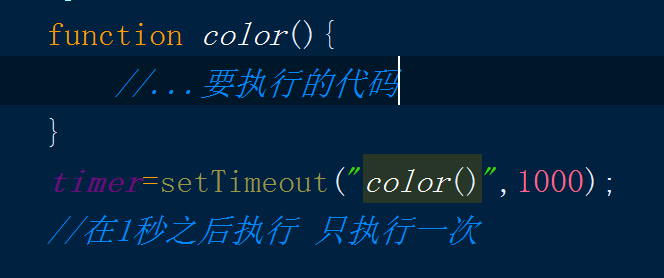

- JS有哪些数据类型
五种基本类型：
undefined：只有一个值，在使用var声明变量但未对其加以初始化是，这个变量的值就为undefined；
typeof检测结果为undefined；
null：只有一个值，null值表示一个空对象指针；
typeof检测结果为object；
Boolean：两个值，true和false，对于任何数据类型调用Boolean()函数都会返回布尔值。
数据类型 | 转换为true值 | 转换为false的值 |
Boolean | true | false |
String | 非空字符串 | “ ” |
Number | 非0数值 | 0和null |
Object | 任何对象 | null |
undefined | n/a（不适用） | undefined |
number：整数和浮点数；
整数可表示为8进制：0+序列1~7；
16进制：0x+序列（0~9）及(A~f)；
NaN：表示一个本来要返回数值的操作数未返回数值的情况，NaN与任和值不相等，包括其本身。
引用数据类型
Object
- 常用方法
substr（n,num） //提取指定数目的字符串
substring( n,m ) // 用于提取字符串中介于两个指定下标之间的字符
charAt( n ) //返回指定位置的字符 n 下标
charCodeAt( n ) //返回字符的unicode字符编码
indexOf（string,开始位置num） //从0开始查找字符串的子串
match() //内容匹配（内容存在将打印出来，不存在就是null）
replace() // replace("aaa","bbb")aaa替换成bbb
split() // split("作为分割的元素") 如：var str = “word,hhhh,ssss”; split(",")
concat() //合并数组
sort() //排序
reverse() //翻转
random() //随机数 从0~1
lastIndexOf（string） //从尾部开始找
getFullYear(): //获取年份
getTime(): //获取毫秒
setFullYear(): //设置具体的日期
getDay(): //获取星期
字符串方法：
concat（） //连接字符串 例： myarr1.concat(myarr2,myarr3)
reverse ( ) //方法用于颠倒数组中元素的顺序
DOM对象控制HTML：
getElementsByName() //获取name
getElementsByTagName() //获取元素
getAttribute() ///获取元素属性
setAttribute() // 设置元素属性
childNodes() //访问子节点
parentNode() //访问父节点
createElement() //创建元素节点
createTextNode() //创建文本节点
insertBefore() //插入节点 insertBefore(要插入的，相对元素)
removeChild() //删除节点
offsetHeight //网页尺寸 不包含滚动条 offsetWidth
scrollHeight // 网页尺寸 包含滚动条 scrollWidth
window.innerHeight //浏览器窗口的内部高度
window.innerWidth //浏览器窗口的内部宽度
计时方法：
setInterval() //间隔指定的毫秒数不停地执行指定的代码
clearInterval() //方法用于停止 setInterval() 方法执行的
setTimeout() // 暂停指定的毫秒数后执行指定的代码
clearTimeout() //方法用于停止执行 setTimeout() 方法的函数代码
History方法：
history.back() //与浏览器点击后退按扭相同
history.forward() //与浏览器中点击按钮向前相同
history.go() // 进入历史中的某个页面
location对象方法：
location.assign() //方法加载新的文档 与location.href效果一样
Math 方法：
Math.floor（） //返回小于等于数字参数的最大整数，对数字进行下舍入 如：Math.floor(4.5) = 4；
Math.max //可以实现得到数字中最大的一项
Math.min //可以实现得到数字中最小的一项
Math.ceil() //向上取整数
Math.floor() //向下取整数
Math.round（） //四舍五入
Math.random（） //返回一个大于或等于 0 但小于 1 的符号为正的数字值
currentStyle() : //针对IE浏览器
getComputedStyle(): //针对 火狐浏览器
- 定时器有哪些用法
1：setTimeout允许设置一个延时对象，一定时间之后执行这个对象，但是只执行一次，不会重复执行；
代码示例如下，该定时器被设置为1000ms，即一秒之后执行一次，并且只执行一次；

2：setInternval允许设置一个延时对象，每隔一定时间之后重复执行这个对象，无限循环，直到该定时器被清除，或者页面关闭
代码示例如下：该定时器会每隔1秒，执行一次该函数，并且循环执行

3：清除定时器
window.clearTimeout(time1)
window.clearInterval(time1）
- id和class有什么区别
css只用class来写并有专门的class通用和私有模块命名，id具有唯一性且优先级太高只作为js操作dom的挂钩全部不添加样式，如果使用jq或zepto的话，操作的class类名一般也不加样式，这部分的class命名和id一样由js来制定。这样做比较适合大型，多人维护并且需要长期迭代的项目，css的class类名和js操作的id、class类完全分离，这样产品的ui或者产品交互逻辑变动二者互不影响，易维护。
- JS中基本类型和引用类型分别指的的是什么？有何区别？
基本数据类型传的是数值，引用类型传的是变量堆内存的地址
- 简述JS中执行环境与作用域的关系
函数的每次调用都有与之紧密相关的作用域和执行环境。从根本上来说，作用域是基于函数的，而执行环境是基于对象的(例如：全局执行环境即window对象)。
换句话说，作用域涉及到所被调用函数中的变量访问，并且不同的调用场景是不一样的。执行环境始终是this关键字的值，它是拥有当前所执行代码的对象的引用。每个执行环境都有一个与之关联的变量对象，环境中定义的所有变量和函数都保存在这个对象中。虽然我们编写的代码无法访问这个对象，但解析器在处理数据时会在后台使用它。